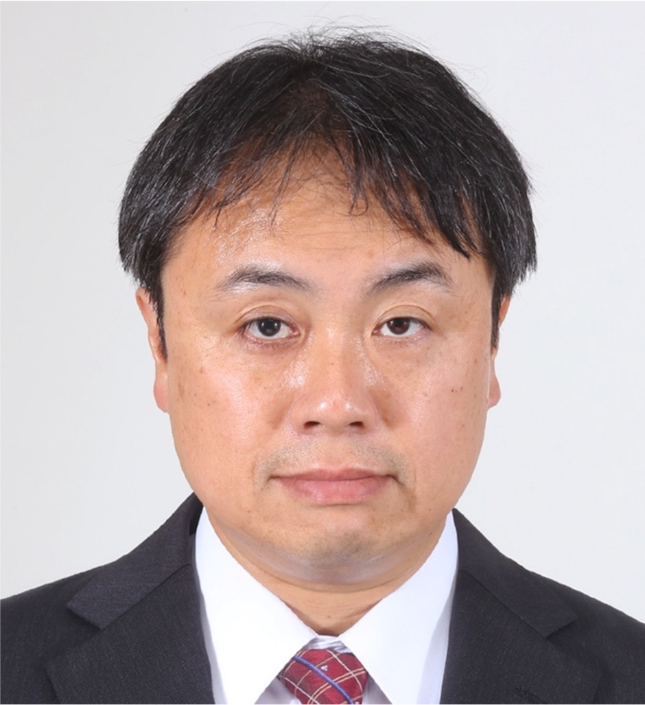

Director, NEC Knowledge Science Research Laboratories · Fellow (Concurrent), IIS, the University of Tokyo
渡邉 誠
Director, Knowledge Science Research Laboratories, NEC Corporation
Fellow (concurrent), Institute of Industrial Science, the University of Tokyo
Specializing in the modeling of flat-panel display devices—
from thin-film transistors (TFTs) and IGZO FETs
to liquid crystal cells—with machine learning (reservoir computing)
for high-speed, high-accuracy circuit simulation.

Machine learning-based modeling (reservoir computing) of display devices including liquid crystal cells, TFTs, and IGZO FETs, with transfer learning for design parameter adaptation.
Journal articles, international conference papers, invited talks, review articles, and patents (31 filed, 25 registered).
Over 30 years of R&D experience spanning NEC, Sony, Japan Display, Ushio, and Silvaco Japan, with a doctorate from the University of Tokyo.
| Jun 2026 | Appointed as Fellow at the Institute of Industrial Science (IIS), the University of Tokyo. |
| 2025 | Paper on reservoir computing model with transfer learning for liquid crystal cells published in IEEE Transactions on Electron Devices, 72(2):911–918. |
| 2024 | Invited review article on machine learning-based liquid crystal cell modeling published in the Journal of the Japanese Liquid Crystal Society. |
| 2023 | Delivered invited talk "From Device Technology Development to Complete Display Design" at OLEDs WORLD SUMMIT. Presented at IDW 2023. |
| 2022 | Published paper on high-speed LCD simulation via parallel reservoir computing in Japanese Journal of Applied Physics. Presented at IDW 2022 and EDTM 2022. |
My research focuses on the modeling and circuit simulation of flat-panel display (FPD) devices—including liquid crystal cells, thin-film transistors (TFTs), and IGZO (In-Ga-Zn oxide) FETs. Drawing on extensive industrial experience in physics-based compact model development, I apply machine learning techniques—particularly reservoir computing (RC)—to device modeling, aiming to achieve high-speed, high-accuracy simulation with adaptability to design parameters through transfer learning.
This research applies reservoir computing (RC) to macro-model the complex nonlinear and time-series responses of liquid crystal cells. Compared to conventional physics-based models, this approach significantly reduces computational cost while maintaining high-fidelity reproduction of dynamic behavior. Results have been published in the Japanese Journal of Applied Physics (2022, 2023) and IEEE Transactions on Electron Devices (2025).
To rapidly adapt the RC-based device model to varying design parameters, I have developed a novel transfer learning framework. The 2025 paper in IEEE Transactions on Electron Devices reports a model responsive to design parameters along with its transfer learning augmentation, enabling efficient generalization across device configurations.
To run large-scale circuit simulations of liquid crystal displays at practical speeds, I have investigated a high-speed approach using a parallel reservoir computing architecture. Initial results were published in the Japanese Journal of Applied Physics (2022), with follow-on work presented at IDW 2022 and IDW 2023.
My work spans the full range of display device modeling: physics-based compact models for TFTs and CAAC-IGZO multi-gate FETs, dynamic behavioral modeling of p-Si TFTs, and VerilogA macro models for liquid crystal cells. Additional experience includes IPS (In-Plane Switching) LCD pixel design, parasitic extraction (QRC), and the construction of integrated EDA/CAD environments for global design teams.
31 filed · 25 registered (representative patents listed below)
| Apr 1989 — Mar 1993 | B.S., Department of Basic Sciences, College of Arts and Sciences, University of Tokyo |
| Apr 2012 — Mar 2014 | MBA (Professional), Graduate School of Management, Globis University |
| Apr 2019 — Mar 2025 | Ph.D. (Engineering), Dept. of Advanced Interdisciplinary Studies, Graduate School of Engineering, University of Tokyo |
| Apr 1993 — Jun 2001 | Senior Staff, Color LCD Division, R&D Dept., NEC Corporation |
| Jul 2001 — Feb 2004 | Senior Staff, HPC Sales Promotion Div., Overseas Dept., NEC Corporation |
| Mar 2004 — Mar 2012 | General Manager, Product Design Dept., Mobile Display Division, Sony Corporation |
| Apr 2012 — Jan 2019 | General Manager, Technology Promotion Dept., Technology Division, Japan Display Inc. |
| Feb 2019 — Mar 2020 | General Manager, R&D Dept., Technology Headquarters, Ushio Inc. |
| Apr 2020 — Feb 2024 | Vice President, Silvaco Japan Co., Ltd. |
| Mar 2024 — Feb 2026 | Division Head, R&D Division, Technology Headquarters, Ushio Inc. |
| Oct 2025 — Mar 2026 | Visiting Research Fellow, Graduate School of Frontier Sciences, University of Tokyo (concurrent) |
| Mar 2026 — Present | Director, Knowledge Science Research Laboratories, R&D Division, NEC Corporation |
| Jun 2026 — Present | Fellow, Institute of Industrial Science (IIS), the University of Tokyo (concurrent) |
For inquiries regarding research collaboration, speaking invitations, or any other matter, please use the contact form. I welcome questions about my work in display device modeling and machine learning.